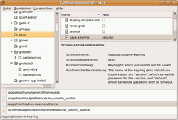
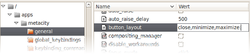
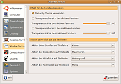
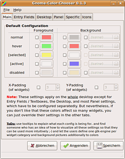
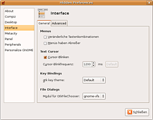

GNOME Konfiguration
Archivierte Anleitung
Dieser Artikel wurde archiviert, da er - oder Teile daraus - nur noch unter einer älteren Ubuntu-Version nutzbar ist. Diese Anleitung wird vom Wiki-Team weder auf Richtigkeit überprüft noch anderweitig gepflegt. Zusätzlich wurde der Artikel für weitere Änderungen gesperrt.
Anmerkung: Der neue Artikel GNOME Konfiguration beschreibt sowohl die frühere Konfiguration via gconf als auch die neuere Methode mittels dconf.
Zum Verständnis dieses Artikels sind folgende Seiten hilfreich:
 Manche Benutzer bemängeln an der GNOME-Desktopumgebung, dass sie sich nicht so individuell anpassen lasse wie zum Beispiel die KDE-Desktopumgebung. Dies ist jedoch nicht ganz richtig. Die Möglichkeiten sind vorhanden, nur sind die GNOME-Entwickler der Meinung, dass ein Großteil der Benutzer diese Möglichkeiten überhaupt nicht braucht. Denn eines der Ziele von GNOME ist es, Einfachheit und Benutzerfreundlichkeit zu betonen. Die Software soll "einfach funktionieren“, ohne dass man tausend Optionen anklicken kann bzw. muss.
Manche Benutzer bemängeln an der GNOME-Desktopumgebung, dass sie sich nicht so individuell anpassen lasse wie zum Beispiel die KDE-Desktopumgebung. Dies ist jedoch nicht ganz richtig. Die Möglichkeiten sind vorhanden, nur sind die GNOME-Entwickler der Meinung, dass ein Großteil der Benutzer diese Möglichkeiten überhaupt nicht braucht. Denn eines der Ziele von GNOME ist es, Einfachheit und Benutzerfreundlichkeit zu betonen. Die Software soll "einfach funktionieren“, ohne dass man tausend Optionen anklicken kann bzw. muss.
Möchte man dennoch selbst an den Stellschrauben von GNOME drehen, so kann man entweder Konfigurationsdateien bearbeiten oder diverse Hilfsprogramme benutzen. Diese sind jedoch zum Teil nicht in den Paketquellen enthalten, und es ist nicht auszuschließen, dass die Änderungen, die diese Programme vornehmen, nicht auch an irgendeiner Stelle in Konflikt mit GNOME selber kommen könnten.
|  |
| gconf-edit |
Konfigurationseditor¶
Der grafische Konfigurationseditor ist offizieller Bestandteil von GNOME. Er gibt einem die Möglichkeit, zahlreiche Einstellungen von GNOME und GNOME-Programmen zu bearbeiten, die über die normalen Konfigurationsdialoge nicht zu erreichen sind. Es handelt sich meist um Optionen, die allein für fortgeschrittene Benutzer von Bedeutung sind.
Fortgeschrittene verwenden stattdessen auch gerne das Programm gconftool in einem Terminal-Fenster [4].
Konfigurationseditor starten¶
Der Menüeintrag für den Konfigurationseditor ist von Haus aus deaktiviert, man kann ihn jedoch über den Menüeditor wieder aktivieren. Alternativ lässt sich der Konfigurationseditor über die Tastenkombination
Alt +
F2 und Eingabe von gconf-editor starten. Da die Einstellungen benutzerspezifisch sind, sollte man den gconf-editor nicht mittels sudo - also Root-Rechten - starten, man würde die falschen Einstellungen bearbeiten.
Konfigurationseditor verwenden¶
Die Einstellungen sind in einer Baumstruktur organisiert. Relevant ist normalerweise der Zweig "apps". Hinweise zu einzelnen Optionen finden sich in den entsprechenden Artikeln.
Experten-Info:
Die Einstellungen werden in xml-Dateien unter ~/.gconf gespeichert und können dort im Problemfall auch von Hand bearbeitet oder selektiv gelöscht bzw. umbenannt werden.
|  |
| Fenstersteuerelemente |
Veränderung der Fenstersteuerelemente¶
Die Fenstersteuerelemente kann mit dem Konfigurationseditor verändert werden. Dazu ändert man den Schlüssel "button_layout" aus "apps -> metacity -> general" ab.
| Fenstersteuerelemente | |
| Wert | Beschreibung |
menu | Fenster-Konfigurationsmenü |
: | Trennung zwischen den Fenstersteuerelementen auf der linken und rechten Seite. |
minimize | Schaltfläche um Fenster zu minimieren. |
maximize | Schaltfläche um Fenster zu maximieren. |
Spacer | Beim Spacer handelt es sich um einen geschützten Leerraum. |
close | Schaltfläche um das Fenster zu schließen. |
Standardwerte¶
| Standardwerte | |
| "button_layout" | Vorgaben |
menu:minimize,maximize,spacer,close | Standardwert Gnome |
close,minimize,maximize: | Standardwerte in Lucid Lynx. |
menu:maximize,minimize,close | Standardwerte vor Lucid |
Die Werte können auch direkt mit dem folgenden Befehl im Terminal [4] übergeben werden. Im folgenden Beispiel werden unter Lucid Lynx die Fenstersteuerelemente nach rechts gesetzt :
gconftool-2 --type string --set /apps/metacity/general/button_layout "menu:,maximize,minimize,close"
|  |
| Ubuntu Tweak |
Ubuntu Tweak¶
Ubuntu Tweak  ist ein Programm mit dem man verschiedene Konfigurationen, die in Ubuntu nicht einfach zu erreichen sind, über eine einheitliche Oberfläche schnell und bequem einstellen kann.
ist ein Programm mit dem man verschiedene Konfigurationen, die in Ubuntu nicht einfach zu erreichen sind, über eine einheitliche Oberfläche schnell und bequem einstellen kann.
Unter anderem lassen sich Details zu Compiz, Nautilus, der Energieverwaltung, der Sitzungsverwaltung, GNOME selber und noch eine Reihe weiterer Optionen vornehmen. Hierbei ist zu betonen, dass Ubuntu Tweak nicht tief in das System eingreift.
Alle diese Einstellungen könnte man auch über den Konfigurationseditor von GNOME machen. Ubuntu Tweak dient nur als vereinfachte Oberfläche. So ist es unwahrscheinlich, dass es zu Problemen durch Ubuntu Tweak kommt. (mehr)
|  |
| GNOME Color Chooser |
GNOME Color Chooser¶
GNOME Color Chooser  ermöglicht es, die Farbdarstellung für viele Komponenten im GNOME-Desktop zu ändern. So ist es möglich, die Farben des Hintergrundes, der Fensterdekorationen sowie der Tooltips zu ändern. Weiterhin kann man die Größe der Widgets, also von Schaltflächen oder Scrollbalken, anpassen und noch vieles mehr.
ermöglicht es, die Farbdarstellung für viele Komponenten im GNOME-Desktop zu ändern. So ist es möglich, die Farben des Hintergrundes, der Fensterdekorationen sowie der Tooltips zu ändern. Weiterhin kann man die Größe der Widgets, also von Schaltflächen oder Scrollbalken, anpassen und noch vieles mehr.
In aktuellen Versionen von Ubuntu kann man das Programm aus den Paketquellen über das Paket
gnome-color-chooser (universe [3])
 mit apturl
mit apturl
Paketliste zum Kopieren:
sudo apt-get install gnome-color-chooser
sudo aptitude install gnome-color-chooser
installieren[1]. Danach kann man es aus dem Menü heraus unter
"System -> Einstellungen -> Gnome Color Chooser"
starten.
Wie GNOME Color Chooser eingesetzt werden kann, den Bildschirm-Platzverbrauch von Programmen zu optimieren, lässt sich hier nachlesen.
GNOME Configurator¶
GNOME Configurator fasst viele Einstellungsmöglichkeiten in einem Programm zusammen. So lässt sich das Verhalten von Menüleisten definieren, die Farben anpassen und individuelle Einstellungen für das GNOME-Panel definieren sowie erweiterte Einstellungen für GNOME-Programme wie Epiphany, Galeon , Nautilus und den Fenstermanager Metacity vornehmen.
Das Programm ist nicht in den Paketquellen von Ubuntu vorhanden. Das bedeutet, dass man es selber kompilieren muss. Die folgenden Pakete inklusive aller Abhängigkeiten sind notwendig, um GNOME Configurator erfolgreich kompilieren zu können:
libgtk2.0-dev
libgnomeui-dev
mit apturl
Paketliste zum Kopieren:
sudo apt-get install libgtk2.0-dev libgnomeui-dev
sudo aptitude install libgtk2.0-dev libgnomeui-dev
Anschließend kann man das Programm kompilieren[2] und installieren. Danach kann man es aus dem Menü heraus unter
"Anwendungen -> Systemwerkzeuge -> GNOME Configurator"
starten.
|  |
| Hide and Seek |
Preferences Hide and Seek¶
Preferences Hide and Seek ist ebenfalls ein Programm, das viele Einstellmöglichkeiten zentral zusammenfasst. Mit Hide and Seek kann man das Verhalten des Desktops konfigurieren, Einstellungen zu Metacity und dem GNOME-Panel vornehmen und sogar verschiedene Effekte von Compiz komfortabel verwalten.
Das Programm ist nicht in den Paketquellen von Ubuntu vorhanden. Das bedeutet, dass man es selber kompilieren muss. Die folgenden Pakete inklusive aller Abhängigkeiten sind notwendig, um den GNOME Configurator erfolgreich kompilieren zu können:
libgtk2.0-dev
libgnomeui-dev
mit apturl
Paketliste zum Kopieren:
sudo apt-get install libgtk2.0-dev libgnomeui-dev
sudo aptitude install libgtk2.0-dev libgnomeui-dev
Anschließend kann man das Programm kompilieren[2] und installieren. Danach kann man es aus dem Menü heraus unter
"System -> Einstellungen -> Hidden Preferences"
starten.
Hinweise¶
GNOME Color Chooser und GNOME Configurator fügen oftmals Daten zu den Dateien
~/.gtkrc-2.0
~/.gtkrc-2.0-gnome-color-chooser
oder allgemein
~/.gtkrc-2.0*
im Homeverzeichnis hinzu. Wechselt man das Theme und die individuellen Anpassungen passen nicht mehr zum neuen Theme, so kann man diese Dateien gefahrlos löschen und somit die Anpassungen rückgängig machen.
- Erstellt mit Inyoka
-
 2004 – 2017 ubuntuusers.de • Einige Rechte vorbehalten
2004 – 2017 ubuntuusers.de • Einige Rechte vorbehalten
Lizenz • Kontakt • Datenschutz • Impressum • Serverstatus -
Serverhousing gespendet von